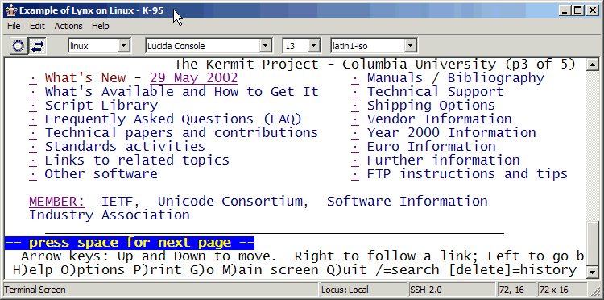
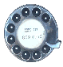
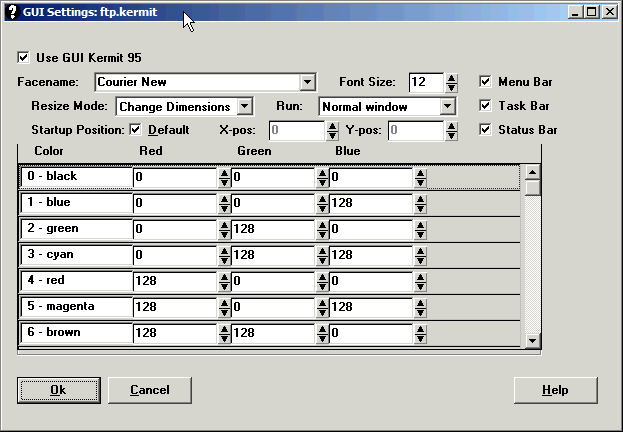
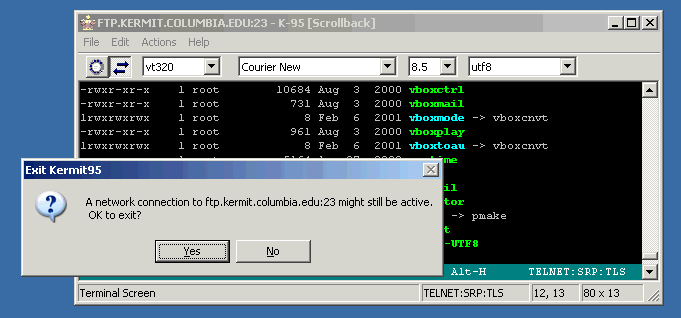
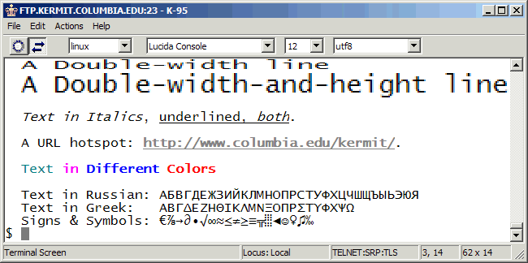

As of: Kermit 95 3.0.0 DEV
1 January 2003
[ Kermit 95 Home ]
[ Kermit Home ]
- INTRODUCTION
- MAKING CONNECTIONS
- STARTING AND STOPPING K95G
- THE DIALER
- NEW COMMANDS AND VARIABLES
- THE STATUS BAR
- THE MENU BAR
- THE TOOL BAR
- SCROLL BARS
- DIALOGS
- WINDOW SIZE
- TERMINAL EMULATION FEATURES
- FONTS AND CHARACTER SETS
- (NOT) BUGS
Kermit 95 2.0 was the first K95 release that runs
in a graphical user interface (GUI) window. The GUI version of Kermit 95 is
called K95G. A console-window version remains available; it is called K95, as
before. This document describes the GUI-specific features of K95G.
The user interface of K95G is the same as K95:
text-mode commands and prompts plus a separate full-GUI connection manager
(Dialer). But K95G also has a new, more "native-Windows" look, font
selections, a closer connection to the Dialer, and new GUI-based controls and
dialogs for its most essential functions. Conversion to a GUI window solves
numerous problems that affect all Windows Console applications, especially in
Windows 95/98/ME: the disappearing cursor, Caps Lock confusion, the
"incredible shrinking window", extraneous or out-of-order characters on
screen, loss of focus when started from a GUI application, various Copy/Paste
problems, inability to use Input Method Editors, ghost images on the screen,
and on and on and on. Here's a capsule comparison of the GUI and Console
versions:
| Feature
| GUI
All Windows
| Console
Win9x/ME
| Console
NT/2000/XP/7/8/10/11
|
| Kermit Menu
| Yes
| No
| No
|
| Kermit Toolbar
| Yes
| No
| No
|
| Scrollbars
| Yes
| No
| No
|
| Font Selection
| Yes
| No
| Limited
|
| Multiple Scripts
| Yes
| No
| Limited
|
| Save Font Preferences
| Yes
| No
| No
|
| Stretch Screen Dimensions
| Yes
| No
| No
|
| Stretch Font Size
| Yes
| No
| No
|
| Maximize/Restore
| Yes
| No
| No
|
| True Fullscreen
| No
| Yes
| Yes
|
| True Underlining
| Yes
| No
| No
|
| Double High/Wide Characters
| Yes
| No
| No
|
| [x] Box Works
| Yes
| No
| Yes
|
Here's the K95G Terminal screen:

Quick tour:
- The Title Bar
- Shows how window title can be set (with
--title: command-line option or the SET TITLE command). Minimize,
Maximize/Restore, and Exit controls on the right all work.
- The Menu Bar
- File, Edit, Actions, and Help menus are provided.
- The Tool Bar
- The left button (Dial icon) brings up the
Dialer. The button next to it switches between the Terminal (→) and
Command (←) screens. Combo boxes are provided to choose (and show) the
terminal emulation, font, font size, and host character set.
- The Terminal Screen
- Commonly called the "blue screen" since that's the default background
color for non-ANSI terminal emulations. Of course you can choose any colors
you like, such as white as in this example, which shows an SSH session to
Linux, emulating the Linux console, running the text-mode Lynx web browser to
access the Kermit website.
- The Vertical Scroll Bar
- Use this in both the Terminal and Command windows to access previous
screens, up to two million lines worth. The scroll bar also shows whether
the current screen is scrolled back, and how far.
- The Status Bar
- Indicates K95G's current active screen (Command or
Terminal), the communications protocol (in this case SSH2), the cursor coordinates, and the screen dimensions. The lower right
corner lets you stretch or shrink the screen.
These are discussed below, along with various other screen elements not
shown: popup dialogs and help screens, etc.
The graphical method for making connections remains the K95 Dialer, but now it
is available directly from the K95G Menu bar and Tool bar. As always, the
Dialer it lets you define, set up, configure, and launch connections, and
manages a persistent database of connections and their settings for you, so
once you set up a connection the way you want it, all its characteristics
are remembered and you can re-launch it any time in the
future with just a couple mouse clicks.

Remember: Toolbar buttons act on a single
click. If you double-click the Dialer's CONNECT button, you get two sessions.
When you start the Dialer from K95G and then launch a connection from the
Dialer, the connection reuses the same instance of K95G if there is no active
connection. If you launch second or subsequent connection from the Dialer, it
starts a new copy of K95G (or K95, depending on the connection). If you exit
from the Dialer, the K95[G] sessions are not affected. If you exit from K95G,
the Dialer is not affected. Only one copy of the Dialer can be active at one
time; all copies of K95G share the same copy of the Dialer.
If you bring the Dialer to the foreground by using K95G's Dial toolbar button,
the next session started from the Dialer reuses the current K95G instance if
there is no active session.
If you bring the dialer to the foreground using any other method, the next
connection launched from the Dialer starts a new copy of K95G.
As always, the Dialer can not be used for changing settings of an
active connection. Any changes made to a connection's settings take effect
the next time you launch the connection. To change settings of the active
connection, you must use K95G's Menu or Tool bar or its Command Screen.
Kermit 95 2.0+ has several command-line options, some of them GUI-specific,
which are used by the Dialer when you specify the associated values in the
Dialer's GUI page or Terminal page:
- --xpos:n (K95G only)
- X-coordinate of window position, expressed as the number of pixels
to the right of the upper left screen corner
- --ypos:n (K95G only)
- Y-coordinate of window position, expressed as the number of pixels
below the upper left screen corner.
- --fontname:s (or --facename:s) (K95G only)
- Font/typeface name: string with _ (underscore) replacing blank.
- --fontsize:n (K95G only)
- Font point size, number, such as 14. Half sizes can be given; e.g. 14.5.
- --height:n
- Screen height (number of rows).
- --width:n
- Screen width (number of columns).
- --termtype:name
- Terminal emulation name, such as vt220.
- --title:string
- Window title (string may contain spaces, which case you should
enclose the the entire option in doublequotes:
"--title:This Is the Title".
The following options were added in K95 2.1.3:
- --nomenubar
- The K95G window is to include no menu bar.
- --notoolbar
- The K95G window is to include no tool bar.
- --nostatusbar
- The K95G window is to include no status bar.
- --nobars
- Equivalant to
--nomenubar --notoolbar --nostatusbar.
- --nopush
- Disallows invocation of external applications or commands
from within Kermit 95 (GUI or Console). This also disables K95G's
Dialer button.
- --noescape
- Prevents the user from manually returning to the Command screen from the
Terminal screen: disables the CONNECT-mode escape sequence as well as
the \Kexit keyboard verb.
- --noscroll
- Prevents the user from scrolling back to previous screens: disables
the scrollback-related keyboard verbs as well as the GUI scrollbars (but
does not make the scrollbars disappear).
- --lockdown
- Combines --noscroll,
--noescape,
--nopush,
--nobars and to create a "captive" session.
- --maximize
- Starts K95G maximized (full screen).
Equivalent to SET GUI WINDOW RUN-MODE MAXIMIZE.
- --minimize
- Starts K95G minimized (i.e. appearing only on the Windows task bar).
Equivalent to SET GUI WINDOW RUN-MODE MINIMIZE.
- --scalefont
- Screen size changes are to result in font scaling (this is the default).
- --changedim
- Screen size changes are to leave the font size alone and change the
number screen rows and columns.
You can also use these yourself when starting K95G from a command prompt,
batch file, VB program, etc. and you can use them in desktop shortcuts
(right-click on the shortcut, choose properties, and fill in the desired
command-line options).
K95G can be safely stopped by clicking the [x] box on the Title bar
in any Windows version, even Windows 95, 98, or ME; this is not safe in
the Console version in Win9x/ME because Windows does not notify the
application that it is being closed, so locked resources can be left behind.
This is why the [x] box is grayed out in Console version
on Win9x/ME.
When you exit from K95G, several tidbits are stored in the Windows Registry:
- Screen position.
- Font.
- Font size.
Next time you start K95G, in the absence of other instructions (e.g. from
a Dialer entry or desktop shortcut), it uses the most recently stored screen
position and font information.

The Dialer icon is a rotary telephone dial. Although we don't use rotary
phones much anymore, the telephone dial was a universally recognizable symbol
for making connections. The Dialer has a GUI settings page, shown below.
Each connection can have its own separate GUI settings.

The items on the page are:
- [ ] Use GUI Kermit 95
- Check to use K95G for this connection (default); uncheck to use the
Console version of K95. If you uncheck this box, the rest of the page
is grayed out, since these settings do not apply to the Console version.
- Facename
- The font to be used on this connection.
- Font Size
- The font size, in points.
- Resize Mode:
- How K95 should react when its screen is resized with the mouse:
Change dimensions (i.e. the number of character rows and columns on the
screen) or Scale font (keep the rows and columns constant and scale the
font to fit the new screen size as closely as possible).
- Run:
- The run mode for K95's window: Normal, Maximized, or Minimized.
- Startup Position: [ ] Default
- Check this box to let Windows decide where the K95 screen should be
located on the desktop when it starts. Uncheck this box to specify a
startup location.
- X-pos: [ ] Y-pos [ ]
- (Only if Startup Default is unchecked) The horizontal (X) and vertical (Y)
positions for the upper-left corner of the K95G window at startup, measured
in pixels from the upper-left screen corner. The actual values depend on
your monitor and Windows display settings; some trial and error is required
to achieve a particular placement, and the coordinates are not necessarily
compatible from one PC to another.
- [ ] Menu Bar
- [ ] Tool Bar
- [ ] Status Bar
- These are normally checked. To remove the Menu bar from the K95 window,
uncheck Menu Bar; ditto for the Tool and Status bars.
- The Color Table
- Terminal/Host connections allow the host to control the colors on your
terminal screen using "ANSI color" escape sequences. These allow the
specification of 16 colors: black, blue, green, cyan, red, magenta, etc. Each
of these is defined by a particular mixture of Red, Green, and Blue (RGB) hues
whose intensities are specified by a number, 0-255. You can alter the
definitions for each "ANSI" color in this table by changing the numbers. The
column to the right is reserved; in a future release it will show the actual
color of the result.
- ASK /GUI variable prompt
- ASKQ /GUI variable prompt
- A version of the ASK and ASKQ commands that uses a GUI popup in
which the user can enter text. It succeeds if the user clicks OK (regardless
of whether the text box was filled in) and fails if Cancel was clicked.
At present there is no way to specify a default answer.
- DIALER
- If the K95 Dialer is loaded, brings it to the foreground. If it isn't,
loads and starts it.
- GETOK /GUI prompt
- A version of the GETOK command (asks a Yes/No question)
that uses a GUI popup. Succeeds if user clicked OK or Yes; fails if user
clicked No or Cancel. The default answer is always No (a future release
might include a way to specify a default answer).
- IF GUI command
- Only runs the specified command under K95G. For example, placing
if gui set gui window resize-mode change-dimensions in your
k95custom.ini will set the resize-mode for K95G and do nothing in K95.
- SET GUI RGB-COLORS
ansi-color-name
red-value green-value blue-value
- Changes the definition of the given ANSI color. The RGB values are
numbers between 0 and 255. The ANSI color names are
black, darkgray, lightgreen, magenta, blue, green, lightgray, red, brown,
lightblue, lightmagenta, white, cyan, lightcyan, lightred, and yellow.
- SET GUI FONT name [ size ]
- Chooses a monospace font to be used in K95G's Terminal and Command
windows. The size can be an integer (whole number) such as 12, or a
fractional number, such as 12.4, which is rounded to the nearest half
point. The font name and size can also be specified on the Dialer GUI
page, on the K95G Toolbar, and in K95G command-line options.
- SET GUI DIALOGS { ON, OFF }
- Tells whether popups should use GUI dialogs (ON) or text-mode popups (OFF).
GUI DIALOGS are ON by default. OFF might be more comfortable for touch
typists and old Kermit hands (OFF allows typeahead).
- SET GUI MENUBAR DISABLED
- Disables items on K95s Menu bar which allow the current session
configuration to be altered (2.1). The menu bar does not
disappear but disabled actions are grayed out and cannot be selected.
Prior to K95 3.0, this command was named SET GUI MENUBAR OFF
which is still accepted for compatibility with existing scripts.
To make the menu bar totally disappear, use the --nomenubar
command-line option (2.1.3).
- SET GUI MENUBAR VISIBLE { OFF, ON }
- Shows the menu bar, or hides it and moves important menu items on
to the Window Menu. Has no effect
if the menu bar was hidden with the --nomenubar or
--nobars command line options (3.0)
- SET GUI TOOLBAR DISABLED
- Disables the Terminal Type, Font, and Character-set selection items on
K95s Tool bar (2.1). The tool bar does not disappear or stop responding to
mouse actions, but Terminal Type, Font, or Character-set selections in the
tool bar have no effect. Prior to K95 3.0, this command was named SET
GUI TOOLBAR OFF which is still accepted for compatibility with existing
scripts. To make the tool bar totally disappear, use the
--notoolbar command-line option (2.1.3).
- SET GUI TOOLBAR VISIBLE { OFF, ON }
- Shows or hides the status bar. Has no effect
if the status bar was hidden with the --nostatusbar or
--nobars command line options (3.0)
- SET GUI STATUSBAR { OFF, ON }
- Shows or hides the status bar. Has no effect
if the tool bar was hidden with the --notoolbar or
--nobars command line options (3.0)
- SET GUI WINDOW POSITION x y
- Moves the K95 window to the given coordinates (expressed in pixels
from the top left corner). If you put this command in your
K95CUSTOM.INI file, the specified position becomes the default
K95G startup position. You can specify the startup position for a
particular K95G connection on the Dialer GUI page for that connection.
You can also specify the startup coordinates for a particular K95G
instance on the command line.
- SET GUI WINDOW RESIZE-MODE
{ CHANGE-DIMENSIONS, SCALE-FONT, NONE }
- Tells K95 how to respond to resize events: CHANGE-DIMENSIONS changes the
number of rows and columns on the screen to fit the new size, keeping the font
size constant; SCALE-FONT keeps the rows and columns constant, changing the
font size to make them fit as well as possible into the new window size. NONE
prevents manual window resizing by the user and prevents the window from
covering the entire screen when maximized. SCALE-FONT is the default. You
can specify the resizing behavior for a particular K95G connection on the
Dialer GUI page for that connection. If you put a SET GUI WINDOW RESIZE-MODE
command in your K95CUSTOM.INI file, this sets the default resizing
behavior for K95G for when you make connections directly, rather than from
the Dialer.
- SET GUI WINDOW RUN-MODE
{ MAXIMIZE, MINIMIZE, RESTORE }
- Allows K95 to do to itself what you would do by clicking the respective
title-bar buttons. You can also put this command in your
K95CUSTOM.INI file to have K95 start in the desired format, and
specify the desired run mode for a particular connection in the Dialer on
the GUI page.
- SET TERMINAL HEIGHT rows
- SET TERMINAL WIDTH columns
- In K95G, these commands affect both the Terminal Screen and the
Command Screen, and they always affect the number of screen rows and columns,
regardless of the GUI WINDOW RESIZE-MODE setting.
- NOSCROLL
- Disables scrollback.
- SHOW GUI
- Displays SET GUI values, and shows the actual color values.
GUI-related variables include:
- \v(gui_fontname)
- Name of current font.
- \v(gui_fontsize)
- Size of current font in points, perhaps with a fractional part,
e.g. 12.5.
- \v(gui_runmode)
- Current window status: Minized, Maximized, or Restored.
- \v(gui_xpos)
- Current x-coordinate of terminal-screen cursor.
- \v(gui_xres)
- Screen resolution in the X (horizontal) direction,
number of pixels across the screen.
- \v(gui_ypos)
- Current x-coordinate of terminal-screen cursor.
- \v(gui_yres)
- Screen resolution in the Y (vertical) direction,
number of pixels from screen top to bottom.

The status bar at the bottom of the window is divided into six sections;
from left to right:
- Screen indicator (Terminal Screen or Command Screen).
- Current Locus for file management commands
(remote or local, explained in Section 7.3).
- Network protocol (such as Telnet, SSH, Rlogin), along with an indication
of authentication and encryption methods used, if any.
- Cursor coordinates in 1-based column,row (X,Y) notation.
- Terminal screen dimensions, rows × columns.
- Pull corner for changing screen dimension or font size.
Locus is explained
HERE.
Items 4-6 are explained in Section 11.
The K95G menu is clean and simple: File, Edit, Actions, Help.
There are no keyboard shortcuts for K95G's menu items, since every key and
key combination already has application-specific uses.
7.1. The File Menu
- Connections
- Invokes the Kermit 95 Dialer so you can make a connection, or use it in
any other desired way.
- Hangup
- Closes the current connection.
- Exit
- Exits from K95G.
7.2. The Edit Menu
- Paste
- Copies the text (if any) from
the clipboard into the current window (Command or Terminal).
- Mark Mode
- Lets you use your keyboard to mark text for copying to the clipboard
or transmission to the host. The particular action is controlled by the
submenu: Start, Cancel, Copy to Clipboard, Copy to Host. More about
mark mode HERE.
The following actions take place when you choose them in the Actions menu:
- Clear Screen
- Clears (blanks) the current screen
- Clear Scrollback
- Clears (erases) the scrollback buffer for the current screen
- Reset Terminal
- Resets the terminal emulator (e.g. in case "garbage" from the host has
put it into an unwanted state).
- Send...
- Use the submenu to select what to send to the host: Break, Long Break,
NUL (ASCII 0), Telnet Are You There, Telnet Interrupt Process.
- Compose (character)
- Lets you compose a West or East European accented Roman or special
character.
- Unicode Compose (character)
- Lets you enter any Unicode Base Multilingual Plane character by its
4-digit hexademical code value.
The following are "toggles", which you turn on and off in the menu. An option
is checked when it's on, unchecked when it's off; click an option to toggle it
between off and on. Those with an ellipsis ( . . . ) lead to a small submenu.
The menu is arranged alphabetically.
- Autodownload
- Turns automatic recognition of Kermit and Zmodem file-transfer packets off
and on. When on, which is the default, all Kermit-protocol file transfers can
be initiated by the host-resident Kermit program, such as C-Kermit on Unix,
and all Zmodem downloads (but not uploads) can be initiated by the
host-resident Zmodem program. When Autodownload is set to "Ask", a file
dialog pops up when the download begins, to allow you to choose the name
and location for the incoming file. When Autodownload is set to "On",
incoming files are accepted automatically under the name they were sent with
and stored in K95's download directory if one has been specified, or else in
its current directory.
- Automatic Locus Switching...
- Explained below.
- Bytesize...
- Switches terminal bytesize between 7 and 8. These days 8 is the norm.
7 is normally used only on direct or directly dialed serial connections where
the host is using even parity.
- Capture
- Turns session logging on and off. If a session log has not been opened,
the first time you turn capture on, a dialog pops up to allow you to choose
the name and location of the session log file.
- Copy to printer
- Turns printing of incoming material on and off.
- Debug
- Turns terminal-screen debugging on and off. When debugging is on,
control characters and escape sequences are shown, rather than acted upon.
- Exit Warnings
- Enables/Disables warning dialogs if you try to exit K95G when a connection
is active. Exit warnings are enabled by default. Equivalent to SET EXIT
WARNING.
- GUI Dialogs
- Enables/Disables GUI dialogs; equivalent to SET GUI DIALOGS. ON
by default; when OFF, text-mode popups or prompts are used, which (unlike
GUI dialogs) accept typeahead.
- Keyclick
- Turns software keyclick on and off.
- Locus:Local
- Changes Locus for file management commands, explained below.
Checked means Local, unchecked means Remote.
- PCTERM keyboard
- Terns PCTERM keyboard mode on and off, in which Kermit sends up/down
make/break codes for each key, rather than the associated character codes
or Kverbs.
- Resize mode...
- Switches the screen-stretch action between changing the font size and
changing the number of rows and columns (but note that holding Shift while
resizing always changes screen dimensions and holding Ctrl always changes
font size).
- URL highlighting
- Turns automatic URL highlighting off and on. It's on by default.
Locus refers to the target of file management commands when Kermit has
a connection to a server on another computer. Historically, commands such as
CD, DIRECTORY, DELETE, RENAME, and MKDIR have always acted locally in all
Kermit programs. To ask a remote server to do these things required a REMOTE
or "R" prefix: e.g. REMOTE CD or RCD.
When the FTP client was added to Kermit in 2002, this behavior seemed
unnatural to users of text-mode FTP clients. Thus the notion of Locus
was introduced: Local means that unprefixed file management commands are
executed on the local computer; Remote means they are sent to the remote FTP
or Kermit server for execution. By default, Kermit switches Locus
automatically every time you make or break a connection, depending on what
kind of connection it is. When you make an FTP connection, Kermit switches
its Locus to Remote. When you make any other kind of connection, or when you
break any connection, its Locus switches back to Local.
In K95G, automatic Locus switching is accompanied by a popup dialog, informing
you of the switch and asking if it is OK. This is to make sure you know
where commands such as DELETE will be executed! If you would rather
not be bothered by the popups, use the Actions menu to change the Automatic
Locus Switching to On or Off, rather than Ask, or put the appropriate SET LOCUS
command in your K95CUSTOM.INI file. Type HELP LOCUS at the K-95>
prompt for details.
The "Locus: Local" item in the Actions menu actually changes the current
Locus, toggling it between Local and Remote (it is checked when local,
unchecked when remote).
The Console version of K95 behaves the same way, but without the GUI
popups.
7.4. The Help Menu
The Help menu gives access to help text and documents:
- Context
- Gives popup help on the current context, primarily key assignments.
- Kermit 95 Manual
- Access the Kermit 95 manual on your local disk through your web browser.
- Via the Web
- Access the Kermit Project website (Internet connection required).
- About...
- Displays the Kermit version number, date, and copyright.
Like the Menu bar, K95G's Toolbar is minimal yet highly functional.
It consists of two buttons and four combo boxes:
- Button 1
- If you look closely, it's a telephone dial.
Invokes the graphical Dialer (same as File → Connections), used mainly
for opening connections, but also for configuring and managing them. If the
Dialer is not loaded, this button loads and starts it. If the Dialer is
loaded, this button brings it to the foreground. Only one copy of the Dialer
can be active at a time.
- Button 2
- Switches back and forth between the Terminal and Command screens, same as
Alt-x.
- The Terminal Type Combo Box
- Displays the current terminal emulation and lets you change it. This,
like the remaining boxes on the Toolbar, is a combo box. If you click
on the little triangle, a list pops up that you can scroll through (if
necessary) using its scrollbar. Click on any entry to select it. You can
also use arrow keys, Page Up, Page Down, Home, End, etc, to go down and up.
- The Font Combo Box
- Displays the current font (facename) and lets you change it. Fonts are
discussed in Section 12.
- The Font Size Combo Box
- Displays the current font size and lets you change it to any value between
1 and 47.5, in increments of one half point (a point is about 1/72 inch,
and about 1/3 mm). Not all font sizes are valid for a given set of
dimensions, facename, and height/width. When you select a facename or height,
Windows performs a best fit and then the chosen size is automatically updated
with the actual height that windows selected. Changing the font or font size
repaints the current screen in the new font or size, and affects all
subsequent new or scrolled-back screens.
- The Character Set Combo Box
- Displays remote terminal character set selected by you, and lets you
change it. More about fonts and character sets in
Section 12. Changing the character set does not affect
current or previous screens, only material that arrives after the change.
The Toolbar gives you a capsule definition of what you see on the screen and a
mini control panel for making adjustments:
- If the Terminal screen format or layout is wrong, the host and K95G
might have a terminal-type mismatch.
- The font selection determines which characters can be viewed, and the font
size determines how big and/or readable the screen can be. If you see lots of
hollow boxes or question marks on the screen, you might need to switch to a
more complete or appropriate font.
- The character set tells K95G how to interpret the codes sent by the host
(i.e. how to map them to glyphs in the current font) and which codes to send
to the host. If you see garbage where "special" characters (such as accented
or non-Roman letters, Kanji, math symbols, etc) should be, the character set
probably needs changing.
K95G lets you scroll back and forth through both the Terminal and Command
screens using the scroll bar in the normal Windows way: push the slider in the
desired direction; click on the the little arrowheads at top or bottom of the
scrollbar; click above or below the slider; or use your mouse wheel if you
have one. This is not possible in the Console version of K95.
Of course the keyboard-driven methods work as before. For most terminal
emulations, the keys are Page Up, Ctrl-PageUp, Page Down, Ctrl-PageDown,
Home, and End.
Scrollback can be disabled by including the --noscroll command-line
option when Kermit is started or with the NOSCROLL command (2.1.3).
Aside from what's on the menu and toolbar, the only GUI dialogs are help
screens and program-generated popups that require action or information from
the user such as username or password prompts during the secure authentication
process; choosing Yes/No in some particular situation; for example, when you
try to exit with a connection still active:

Popup context-sensitive help dialogs in response to Alt-h have been converted
to GUI popups. The help-screen buttons might be a bit counterintuitive.
Presently the OK button is equivalent to the Alt-H key: it cycles through
through the screens (one or more) of the current help topic. The Cancel
button is equivalent to the Space key, which makes the Console-mode
help screen disappear.
When a K95G GUI dialog contains multiple buttons (such OK and Cancel), the
default response button is highlighted; pressing the Space bar or Enter key
"pushes" it. To press a different button from the keyboard, you can use the
Tab or Right-Arrow key to move the highlighting, and then Space or Enter to
push the button, or you can type the first letter of the word on the button
(if it is underlined). You can also use Esc or Alt-F4 to make any Help screen
or sequence go away.
You can generate popups yourself in scripts, using the new /GUI switch
on the ASK, ASKQ, and GETOK commands, for example:
ASK /GUI name " What is your name? "
if success echo " Your name is \m(name)."
K95G's window size is a function of three factors:
- The font
- The font size
- The screen rows and columns
The font and size can be set in the Toolbar as described in Section 8, or with the SET GUI FONT command described in Section 5, or from the K95 command line
as described in Section 3.
The screen dimensions can be set with the SET TERMINAL HEIGHT and SET TERMINAL
WIDTH commands, as before, and also by stretching the K95G window with the
mouse when Resize Mode in the Actions menu is set to Changes
Dimensions (but note that holding Shift while resizing always changes screen
dimensions and holding Ctrl always changes font size):
- To change the width (the number of columns), position the mouse
pointer over the left or right K95G screen border, hold down the left mouse
button, and drag the border in the desired direction. As you drag, a little
popup shows the changing dimensions as
columns × rows (the first number changes). Let
go of the mouse when you have the desired number of columns.
- To change the height (the number of rows), drag the bottom screen
edge and watch the row count change in the little popup.
- To change the height and width at the same time, drag the lower
right corner of the K95G window in the desired (diagonal) direction; watch
both numbers change in the popup.
It is often desirable to achieve the tallest possible Terminal window that is
also easily legible. To do this, first pick the font and size that are most
comfortable for you, then position the title bar at the top of your screen,
and then stretch the bottom window border to the bottom of the screen.
Alternatively, maximize the window and then drag a vertical edge to achieve
the desired width.
You can also maximize and restore the K95G window using the the middle
button at the right of the Title bar. Maximize (clicking the button when it
contains a single box) expands the K95G window to fill the whole screen,
adjusting the screen dimensions or the font size (according to your Resize
Mode setting in the Action menu) to achieve the best possible fit. Restore
(clicking the button when it shows two boxes) puts the K95G back as it was
before you maximized it. Note that it is not always possible to achieve a
perfect fit because the size units (rows and columns or font points) can be
too granular.
The terminal dimensions (rows × columns) are shown in the rightmost
position of the status bar. If the terminal window includes a Kermit 95
status line, this line is not included (since it is not part of the terminal).

GUI windows allow several effects not possible in Console windows, and
K95G takes advantage of them:
- True underlining. When the emulated terminal type supports underlining
and the host sends underlined text, K95G shows underlined text. The Console
version of K95 uses special colors to simulate underlining. K95G also uses
underlining as part of its default presentation method for URL hotspots
(you can change the presentation method with the SET TERMINAL URL-HIGHLIGHT
command). In ANSI X3.64 based emulations underlining
is selected with <CSI>4m.
- Italics (slanted writing). In ANSI X3.64 based emulations italics
are selected with <CSI>3m.
- Double-width characters. These are used by the VT100-series terminals
for emphasis. In the Console version, these are simulated by wide spacing
of regular characters.
- Double-height-and-width characters, used by VT100-series terminals for
extra emphasis, simulated in the Console version by a double row of spaced
characters.
- Text in many languages and writing systems (next section).
Colors are set in the GUI the same way they are set in the console
version:
- In the Dialer, on the Terminal Settings page; or:
- Via the SET TERMINAL COLOR command.
These are both described in the Kermit 95 manual. In addition, as noted in Section 4, in K95G only, you can change the value of
each color.
See: Character Sets and Fonts in K95G
Most of these are not bugs, but are listed here in case you think they are.
- As noted elsewhere, there can be some dexterity issues with the Dial
button and the Dialer; e.g. double-clicking rather than single-clicking can
produce surprising (but proper) results such as multiple K95G windows.
Clicking on the Dialer's main (white) screen to bring it to foreground changes
the highlighted entry. Double-clicking on the Dialer's main screen to
bring it to the foreground actually opens a session to whetever entry you
happened to click on. And so on.
- When you click the Dial button to invoke the Dialer when the Dialer is not
already loaded, a Console screen appears momentarily, due to the API used to
start the Dialer. If you have configured your console sessions to be
fullscreen, then your entire screen goes black (or other color you have
configured) for a second.
- Some confusion can ensue if you launch the Dialer from K95G, launch
sessions from the Dialer, close the Dialer, open another Dialer, and try to
control (e.g. Hangup) sessions created by the earlier Dialer -- it won't work,
but should not do any harm either. A particular instance of the Dialer only
knows about the sessions it launched.
- As also noted (and explained) elsewhere, clicking OK on
a popup Help screen does not make the help screen go away; for this, use the
Cancel button or the Esc key. Also, some of the text in the popup help screens
is oriented towards the Console version; e.g. it gives the wrong instructions
for how to make the popup go away in the GUI version.
- If you disable screen updates while moving windows (e.g. in Windows XP
Desktop → Properties → Appearrance → Show window contents
while dragging), then in K95G when Actions → Resize Mode →
Changes Dimensions is selected the popup that shows the changing
dimensions is not updated, and with Actions → Resize Mode →
Scales Font, you can't watch the font change size.
- If the Windows font size is too big and/or the K95G window is too narrow,
the Toolbar can be truncated. This is true of almost any Windows application.
- During file transfer initiated by automatic packet recognition in the
Terminal window (autodownload or autoupload), the Status bar says Terminal
screen rather than Command screen. That's because this type of file transfer
occurs in the Terminal screen's context.
- The telnet.exe and rlogin.exe stubs are Console
applications and therefore can load only the Console version of K95.
[ Top ]
[ Contents ]
[ K95 Home ]
[ Kermit Home ]
Kermit 95 GUI / The Kermit Project /
1 January 2003